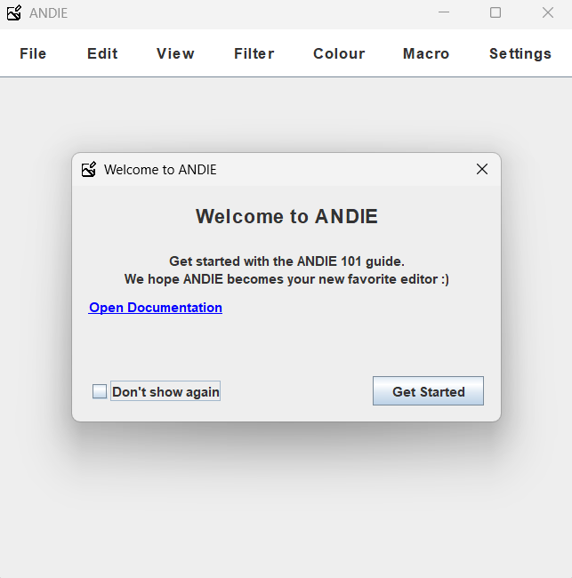
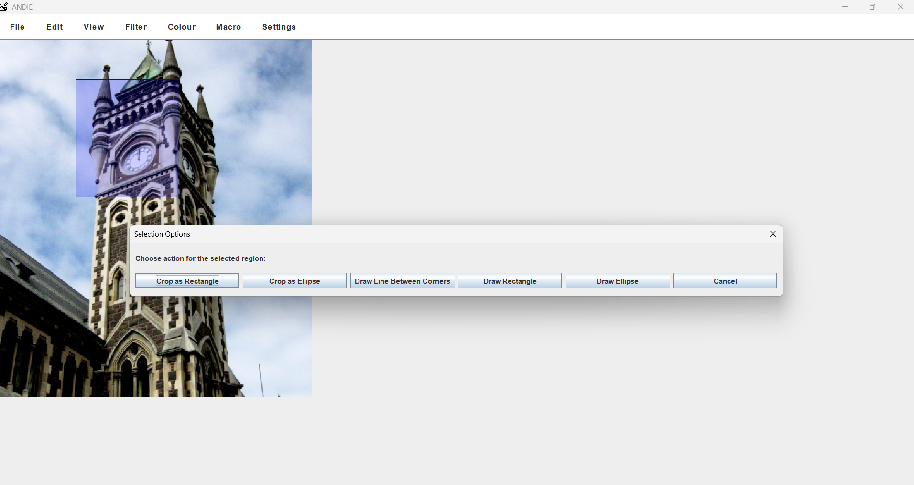

v1.0.0 Stable
ANDIE's developers
Welcome to the guide for ANDIE image editor, we hope you enjoy using the editor as much as we did developing it <3.< /p>
ANDIE is a 'A Non Destructive Editor' (gives rise to the name of our editor :D) with simple and efficent features
This document serves the purpose to help user navigate through ANDIE and be productive as possible. If there is anything that is disambiguous in the documentation please let us know.
Andie keeps a linear history of edits, allowing you to undo and redo actions. However, if you undo an action and then perform a new one, the undone actions are permanently removed from the history, so keep that in mind!
Andie comes with a wide range of features ranging from drawing to manipulating image color. Pretty cool isn't it? Each of the following sections below will give a concise summary of features in ANDIE and how they can be useful to you while you edit.
Whenever you make an edit to your image, you WILL be reminded to save your work.
ANDIE at start-up
ANDIE supports two languages at the moment:
* English
* Dutch
There is a possibility more languages will be supported in the future.
You can export images which prompts the users to enter a file name, and select from the possible formats, a decided on the file placement. If the user cancels the export operation its returns to the program. Otherwise, if the users approves to save then image is export as current into the select file directory. Exporting a file that does not support its specific format type notifies the user with an appropriate error message.
Resizing - The image will be scaled up or down depending on the factor provided (a percentage). If it is
less than 100% the image will be scaled down, else the image will be scaled up accordingly.
Rotate 90
Clockwise - Rotate a image by 90 degrees clockwise.
Rotate 90 Anti-Clockwise - rotate a image by
90 degrees anti-clockwise.
Rotate 180 degrees - rotate a image by 180 degrees (mirror
image).
Horizontal flip- Flip image horizontally in place.
Vertical flip - Flip image
vertically in place.
You can zoom in and out of the selected picture - pretty straightforward.
Andie supports many filters to use for your images.
Note: Edge detection - All filters have image edge
detection and will use the closest available pixel if the kernel overhangs the edge of the image.
Mean - Applys a box blur using a kernel of a user inputted radius.
Sharpen - Applys a sharpen filter to the working image using a kernel and convolution. No user input is
required.
Gaussian - Applys a Gaussian filter to the working image using a given radius to apply values to a kernel
and then is applied via convolution. This has a maximum radius of 10 and will default to 1 if limits are exceeded
or subceeded, though using the built in menu will confine itself to the limits.
Median - Applys a median filter to the working image by averaging the colour channel (inlcuding alpha
channel) of each surrounding pixel and then making the new pixel the median of the surrounding pixels. This
operation is applied to a new image so it does not reuse already processed pixels. This has a maximum radius of 10
and will default to 1 if limits are exceeded or subceeded, though using the built in menu will confine itself to
the limits.
Emboss - Applys an embossing filter to the working image by applying a user specified directional emboss
convolution. A kernel is hardcoded for each (cardinal) direction and passed to the convolution based on user
input.
Sobel - Applys a Sobel filter to the working image in a very similar way to emboss except with 3 different
hardcoded Sobel kernels.
Contrast mask - Enhances the local contrast by creating a blurred inverted greyscale version of the image
and blending it back with the original image. User inputs a blur radius and strength of the effect.
Random scattering - Create a scattered effect by replacing each output pixel with a randomly chosen pixel
from within a user-specified radius around the original pixel location
Threshold - Converts a colour image to black and white based on a specified intensity threshold. Pixels
with average brightness above the threshold become white, and those below become black. The original alpha
(transparency) of each pixel is preserved. The threshold value is provided by the user, between 0 and 255.
Colour Channel Swapping - Reorders the red, green, and blue channels of the working image according to a
user-specified permutation (e.g., RGB, GBR, BRG). The user inputs the desired channel order via a dialog box.
Alpha (transparency) values are preserved. Invalid input will leave the image unchanged.
Image Inversion - Inverts all colours of the working image by subtracting each RGB channel from 255. For
example, a pixel with (R=100, G=150, B=200) becomes (R=155, G=105, B=55). The alpha (transparency) channel is
preserved. No user input is required.
Contrast mask - Enhances the local contrast by creating a blurred inverted greyscale version of the image
and blending it back with the original image. User inputs a blur radius and strength of the effect.
Random scattering - Create a scattered effect by replacing each output pixel with a randomly chosen pixel
from within a user-specified radius around the original pixel location
User can now selected a portion of the loaded image to crop and select as the new image to edit. If they dont want
to crop, they can select to draw a few different shapes in the selected area with customisation options.
Summary:
* User can crop a rectangle or ellipse out of selected region
* User can draw a rectangle or ellipse on the selected region (fill or outlined)
* User can draw line between two selected points
* User decides color of each object from the color palette

Macros allow users to record and replay a sequence of editing actions, making repetitive tasks faster and more efficient. This feature integrate with ANDIE’s non-destructive history model, meaning recorded actions can still be undone or modified after execution.
The following keyboard shortcuts will help accelerate your productivity.
ANDIE was developed and tested thoroughly before being released to the public. We have tried out best to keep bugs out of the stable version. If you find any bugs please let us know!
If you have any ideas that would benefit ANDIE or would like to contribute to ANDIE please let us know.